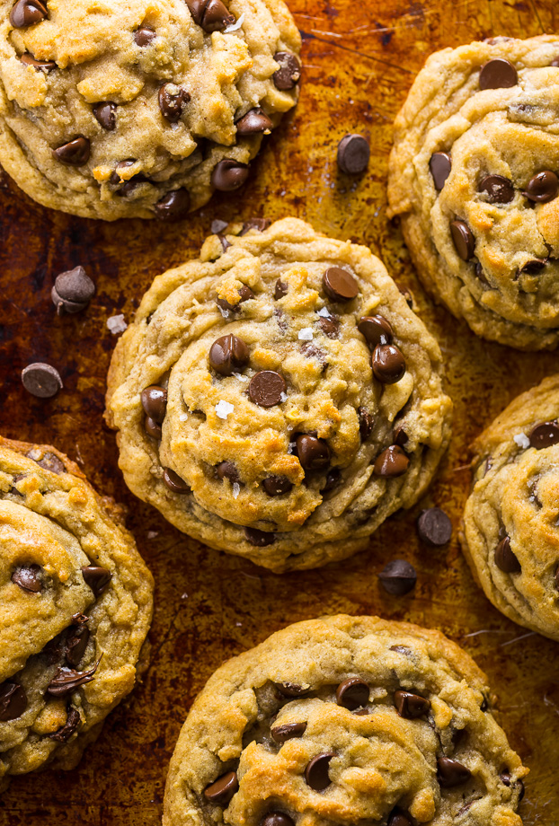

Chocolate Chip Cookies

Description
If you’ve been looking for the best vegan chocolate chip cookie recipe, your search is over!
You don’t have to refrigerate the dough, so you can just roll and bake.
These vegan cookies bake up thick and chewy, with crisp edges!
Ingredients
- 1/2 cup coconut oil, solid but scoop-able
- 1 and 1/4 cups light brown sugar, packed
- 2 teaspoons vanilla extract
- 1/4 cup coconut milk
- 1/4 cup unsweetened applesauce
- 2 and 1/3 cups all-purpose flour (be sure not to pack your flour)
- 1 teaspoon baking soda
- 1/2 teaspoon salt
- 2 cups chocolate chips (use vegan chocolate chips if vegan), divided
- Flaky sea salt, optional
Steps
- Preheat oven to 375 degrees (F). Line a large baking sheet with parchment paper; set aside.
- In a large bowl whisk together the coconut oil, brown sugar, and vanilla, beating until well combined.
Add in the coconut milk and applesauce and whisk until well combined; set aside.
In a separate bowl combine the flour, baking soda, and salt; whisk well to combine.
- Add the dry ingredients into the wet mixture and, using a wooden spoon or very sturdy spatula, stir until ingredients are combined.
The batter will be very thick! Fold in 1 and 3/4 cups of the chocolate chips.
- Scoop three tablespoon sized mounds of dough onto the prepared cookie sheet, leaving a few inches between each cookies for spreading.
Bake for 9 to 10 minutes, or until the edges are golden and the centers have set.
Press remaining chocolate chips on top of warm cookies, and sprinkle with sea salt, if using.
Cool cookies on the baking sheet for 15 minutes before transferring them to a cooling rack.